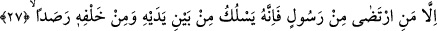

“O gaybı” bir başına “bilendir.” Yâni insanların duygularına ve hislerine kapalı olan
bütün her şeyi tek başına bilen O’dur. Bu cümle daha önceki âyette yer alan Peygamber
Efendimiz’in “kıyâmetin ne zaman kopacağını yakın mı uzak mı olduğunu
bilmediği” hükmünü tekrar başka kelimelerle ifâde eden bir cümledir.
“Sırlarına kimseyi muttali kılmaz”, bildirmez. Buradaki “fâ” Cenâb-ı Hakk’ın gaybı
bilmekte mutlak olarak tek başına olmasının ardından tehdîd ifâde ederek bu hükmün
geldiğini göstermektedir. Şu hâlde gaybı sâdece o bildiği için bunun sonucu olarak
gaybına tam olarak hiç kimseyi sırdaş etmez ve durumu gâyet açık bir biçimde hiç
kimseye açmaz. Bir başka ifâdeyle yaratıklarından hiç kimsede gayb hakkında “ilm-i
yakîn” (gözüyle görmüşçesine kesin bilgi) meydana getirecek bir açılım yapmaz.
27. Ancak, (bildirmeyi) dilediği peygamber bunun dışındadır. Çünkü O, bunun
önünden ve ardından gözcüler salar,
“Ancak, bildirmeyi dilediği”, seçip beğendiği bir “peygamber bunun dışındadır.”
“İrtizâ”, beğenilmek, makbul olmak, beğenilen bir şeyi almak demektir. Buna göre âyet-i
kerîmenin mânâsı; “O gaybını kimseye göstermez ancak bunu seçtiği ve kendisinden râzı
olduğu peygamberine gösterir. O peygamberin risâletine dâir bâzı gaybî bilgileri açar.”
Peygambere verilen bu gaybî bilgi ya onun risâlet prensibleri ile ilgilidir. Ya da
risâletin rükünlerine ve ahkâmına dâirdir. Peygamberin peygamberliğinin doğruluğunu
gösteren bir takım mûcizeler, peygamberlik prensibleri meyanında birinciye örnektir.
Risâletin rükünleri ve ahkâmına örnek olarak mükelleflere emredilen şer’î
mükellefiyetlerin tamamını, mükelleflerin nasıl amel edeceklerini ve bunlara karşılık
âhirette hangi karşılığı bulacaklarını, yine risâlete dayalı olarak âhiret ahvâlini
sayabiliriz. Bu âhiret ahvâli cümlesinden olmak üzere kıyâmetin kopması, yeniden
dirilme ve bunun dışında açıklanması peygamberlik vazifesi olan gaybî bilgiler de
peygamberlere verilebilir. Buna karşılık yukarda sıraladığımız peygamberlik vazifesi
ile ilgili her iki gaybî yöne girmeyen, kıyâmetin ne zaman kopacağı meselesi gibi gaybî
hususları Allah asla hiç kimseye açmaz. Üstelik kıyâmetin ne zaman kopacağının beyân
edilmesi peygamberlik mihverinin üzerinde dönmüş olduğu teşrîi hikmete aykırıdır.
Yukarıdan beri sıralanan açıklamalar ve âyet-i kerîme, evliyânın keşfe dâir
kerâmetleri olmayacağını göstermez. Çünkü keşif mertebelerinin en son ve üst sınırının
peygamberlere âid oluşu, onun altında yer alan mertebelerden herhangi bir mertebede
onların dışında hiç kimsenin yer alamayacağını gerektirmez. Hiç kimse evliyânın kâmil
bir keşif açısından peygamberlerin mertebesinde olabileceklerini iddiâ etmez. Çünkü bu
keşfi; kâmil, sarih ve açık bir vahiyle hâsıl olmuş ve o peygamber gaybe dâir bu bilgiyi
vahiy kanalıyla ve Hak’tan bilgi almak sûretiyle elde etmiştir. Şu hâlde âyette yer alan